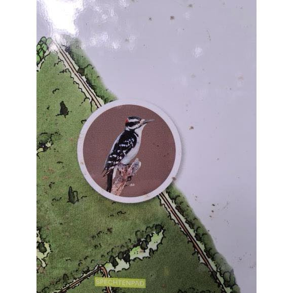
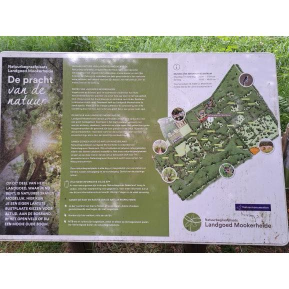

Hairy woodpecker op het spechtenpad
11 november 2024 · Natuurmonumenten, Natuurbegraafplaats Mookerheide
- Op de foto
- Hairy woodpecker
- Het ging over
- Nederlandse spechten


Op @natuurbegraafplaatsmookerheide kan je volgens @natuurmonumenten op het spechtenpad zelfs een Hairy woodpecker tegenkomen! Voor zover wij weten komt deze soort alleen voor in Noord-Amerika. Echter zijn wij nog nooit zelf bij dit spechtenpad wezen kijken, dus wie zal het zeggen 😉